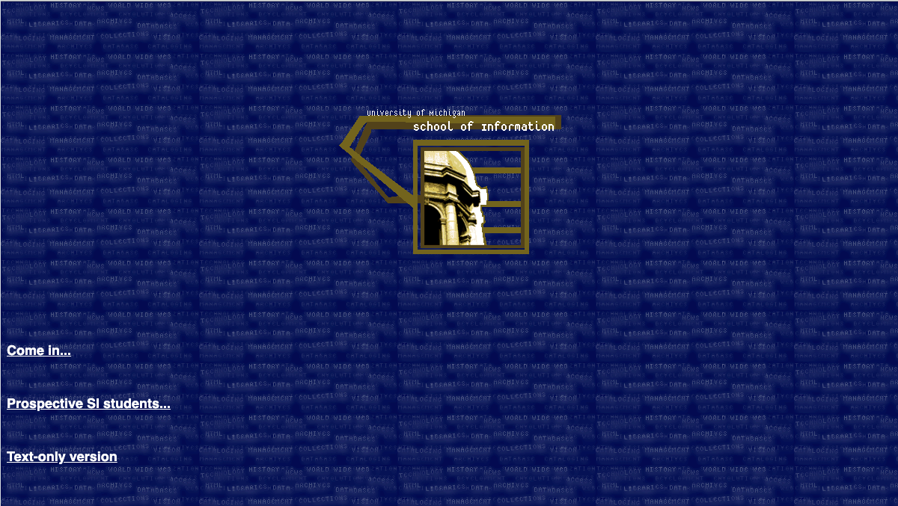
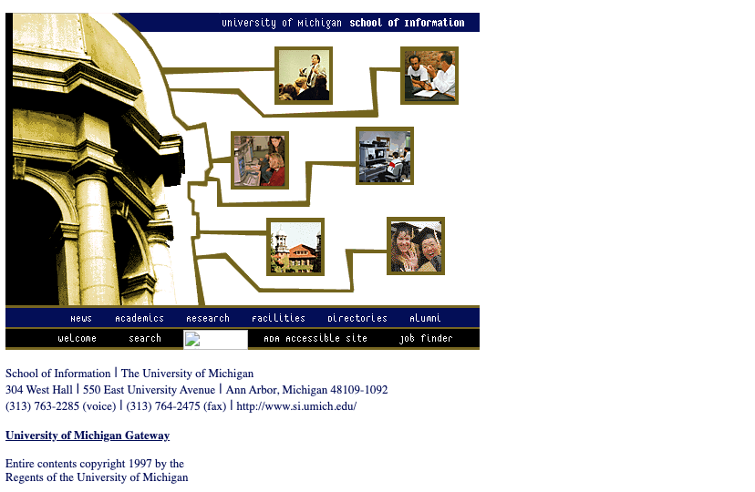
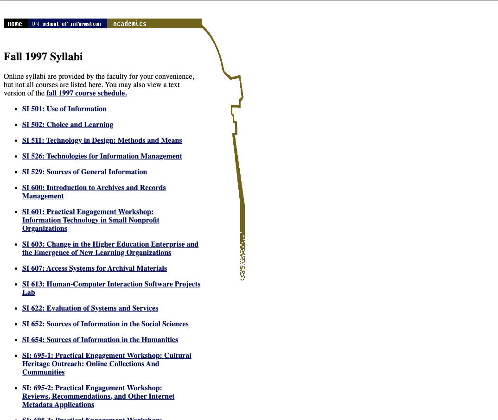
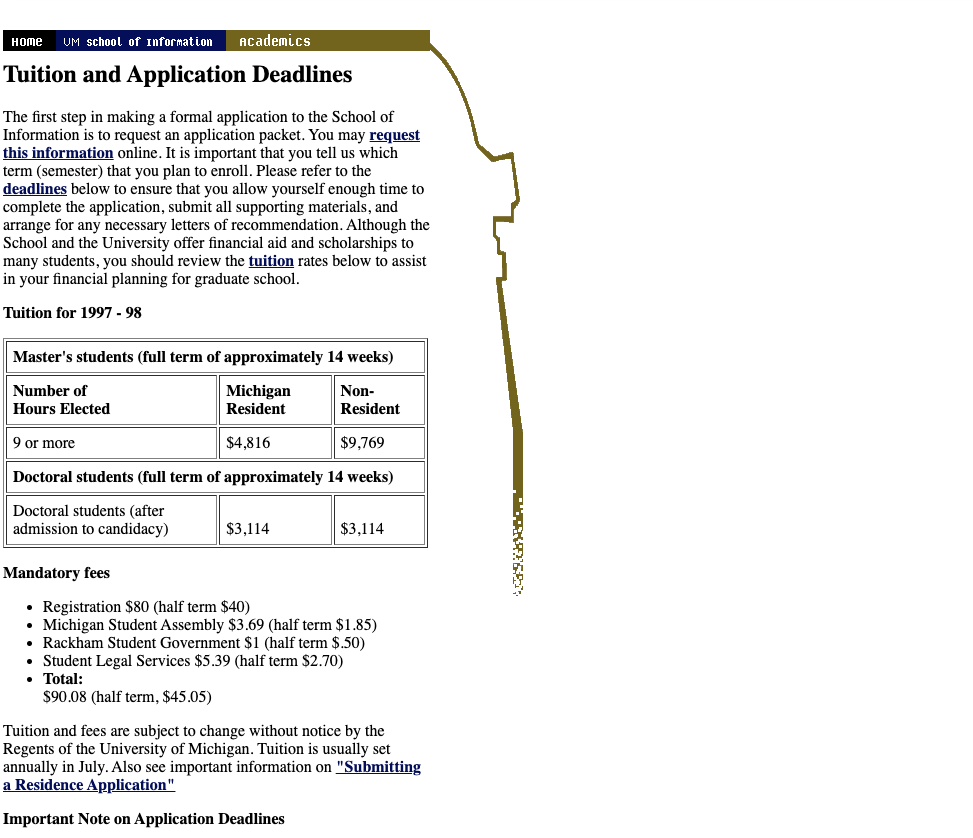
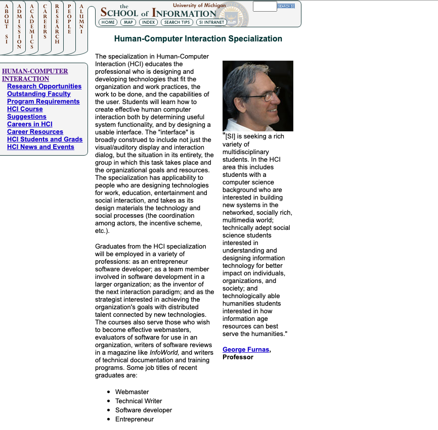
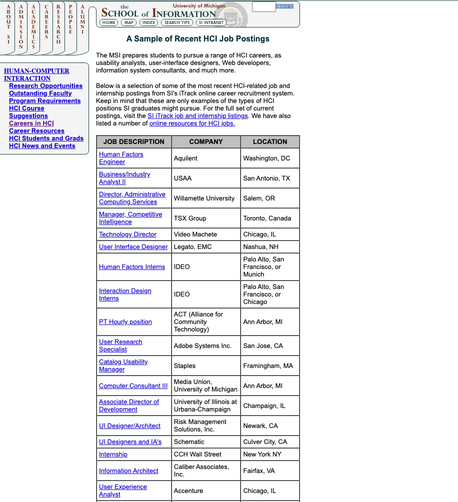
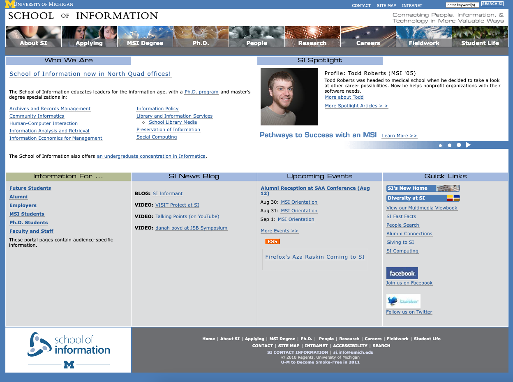

Welcome to the UMSI website history page! Here, you'll learn about the evolution of UMSI's online presence, from its early days to the modern era.
Explore the timeline of UMSI's website design and discover how the school's digital identity has evolved over the years.
1997

UMSI Website Design 1997 Entry

UMSI Website Design 1997 Home

UMSI Website Design 1997 Classes

UMSI Website Design 1997 Tuition
2004

UMSI Website Design 2004 HCI

UMSI Website Design 2004 HCI Careers
2010

UMSI Website Design 2010 Home
2012
UMSI Website Design 2012 Home
2018
UMSI Website Design 2018 Home
2021 to Present
UMSI Website Design 2021 Home